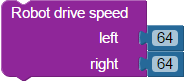
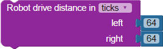

BlocklyProp reference for ROBOT blocks
 These blocks are ONLY available for the Propeller Activity Board WX board type.
These blocks are ONLY available for the Propeller Activity Board WX board type.
- These blocks ARE compatible with the the original and WX versions of the Activity Board. See the BlocklyProp Robotics with the ActivityBot tutorial for many examples of these blocks in use.
- Check which ActivityBot version you have.
- Some blocks and settings are only for the ActivityBot 360° (#32600). Its Feedback 360° servos have internal encoders with a total of 4 wires.
- Some blocks and settings are for the original ActivityBot with external 3-wire encoders (#32500). Be sure
- These blocks are NOT compatible with the Scribbler S2 or S3 robot. See the Scribbler S3 Block Reference for more info.
Robot initialize
 This block lauches a processor automatically. Use only instance of this block per project.
This block lauches a processor automatically. Use only instance of this block per project.
The Robot initialize block is used to set up the robot to drive. If you forget to use this block at the beginning of your navigation programs, a triangle warning will appear on Robot drive... blocks as a reminder.
Choose a robot option from the dropdown:
- ActivityBot: The original ActivityBot robot (#32500) with external 3-wire encoders must be calibrated before use. This can be done using the ActivityBot calibrate block (below). The ActivityBot calibrate block is used by itself (it does not need the Robot initalize block).
- ActivityBot 360°: The ActivityBot 360° (#32600) with 4-wire Feedback360° servos and no external encoders. This robot does not get calibrated.
- Arlo: for use with the Arlo Complete Robot System (#28966), including the DHB-10 motor controller and the Propeller Activity Board WX.
- Servo Differential Drive: Any Propeller-controlled robot** with two wheels that driven with Parallax continuous rotation servos. Choosing this option will expand the block so you can specify the Propeller I/O pins driving the servos.

**See top of page for Propeller board specifics.
Robot set acceleration
The Robot set acceleration block is used to set how quickly the motors change their speeds.
- The first dropdown determines whether this acceleration setting is for use with Robot drive speed blocks or Robot drive distance blocks.
- The second dropdown menu sets the acceleration in units of ticks per second squared. The range is 100 ticks/s2 to 2000 ticks/s2.
With the ActivityBot, when using Robot drive speed the default acceleration is 600 ticks/s2 unless changed with this block. Likewise, with the ActivityBot using Robot drive distance the default acceleration is 400 ticks/s2 unless changed with this block.
Robot drive speed

The Robot drive speed block sends control pulses to the robot's servos that tells the servos what speed in which direction to drive. Negative speeds drive the wheels backward, and positive speeds drive the wheels forward. Turns can be accomplished by setting the wheels to different speeds. A speed of 0 (zero) stops the wheel*.
- For the ActivityBot, the speeds are roughly linear from 0 (stopped) to +/-128 (full speed and the maximum value used). The default acceleration is 600 encoder ticks/s2 unless changed with the Robot set acceleration block.
- For the Arlo Robot, the speeds are (to be determined!)
- For the Servo DIfferential Drive, the speed can be from -128 to 128, but In most cases, you will notice most of the change in speed from -100 to 100. This depends greatly on the type of servo or motor controller being driven.
Robot drive speed and Robot drive distance don't mix! Use a Robot drive stop block in between them first, if you if you want your ActivityBot to switch from using one type of navigation to the other.
*If your Parallax CR Servo rotates slowly or buzzes when set to zero, you may need to center it. Very gently, insert a Philips tip screwdriver into the access hole in the servo's case and slightly twist the potentiometer until the servo holds still.
Robot drive distance

The Robot drive distance block makes the wheels of a robot drive a specific distance. This block only works with robots that have encoders: ActivityBot and Arlo. It does not work with Servo Differential Drive.
For the ActivityBot Robot:
- Units are in single encoder ticks, which are 3.25 mm long.
- The default drive speed is 64 ticks per second, unless changed with the Robot set speed block.
- The default acceleration is 400 ticks/s2 unless changed with the Robot set acceleration block.
Robot drive speed and Robot drive distance don't mix! Use a Robot drive stop block in between them first, if you if you want your ActivityBot to switch from using one type of navigation to the other.
Robot set maximum speed
The Robot set maximum speed block affects the drive speeds of two types of blocks, depending on the dropdown selection.
- Choose speed to set a maximum value that will be used with Robot drive speed blocks. The default max speed for Robot drive speed blocks is +/- 128 ticks per second unless changed to a smaller value with this block.
- Choose distance to change the drive speed used by Robot drive distance blocks. The default speed for Robot drive distance is 600 ticks per second unless changed with this block, but will not exceed 128 ticks per second.
Robot drive stop
The Robot drive stop block makes both right and left wheels stop turning.
Robot encoder counts
The Robot encoder counts block stores the current encoder count values in ticks, in the specified variables.
ActivityBot calibrate
Choose the supported robot from the drop-down menu:
- ActivityBot: for use with the ActivityBot robot (#32500) which has external encoders. The ActivityBot MUST be calibrated before running other navigation programs.
- ActivityBot 360°: for use with the ActivityBot 360° robot (#32600) which uses Feedback 360° servos but no external encoders. Calibration is recommended but optional before running other navigation programs.
This block must be run as its own program with no other blocks.
ActivityBot display calibration
The ActivityBot calibrate block is ONLY for use with the ActivityBot robot (#32500) and the the ActivityBot 360° robot (#32600).
The ActivityBot display calibration block displays information about the calibration values stored in the Activity Board's onboard EEPROM. This block must be run as its own program and it will display information to the terminal window when run.
- results: option displays messages about whether your ActivityBot calibrated successfully, and if not, what might be wrong.
- data: displays the actual calibration values stored in EEPROM. These values may be useful if you are trying to troubleshoot a calibration problem with the help of Parallax tech support staff.